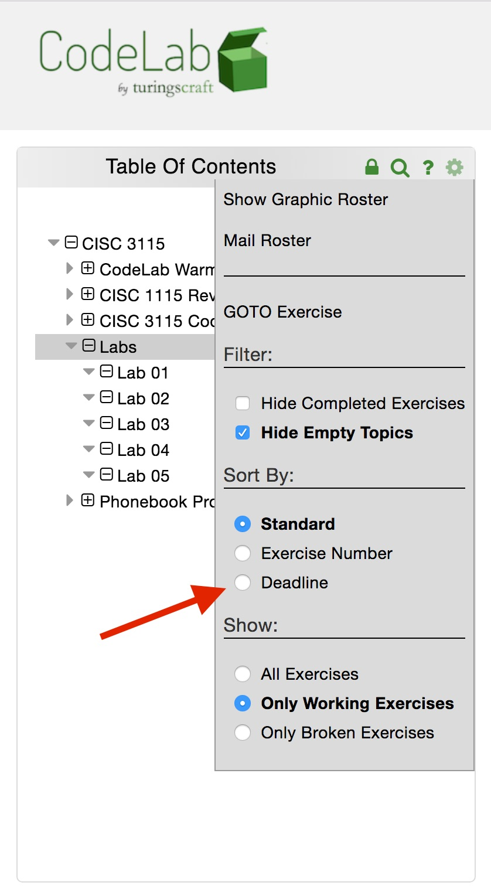

I will be using CodeLab, a learning tool developed at Brooklyn College, to provide some supplemental exercises. If you do not already have a CodeLab account, sign up for one at https://codelab4.turingscraft.com/register. Once you have successfully signed up and logged in, click the green "Add A Course" button on the Courses page. Use Section Access Code
CUNY-26885-AJGW-39
When you open the course page after enrolling, you will see some introductory text, as well as sets of exercises in "CodeLab Warmup" and "CISC 1115 Review" folders. These are optional. Use the review exercises to brush up on anything you're not 100% confident about. Use them at any point during the semester. Do not take this set of exercises as a set of expectations—if there are exercises about a topic you know nothing about, don't worry. (Of course, you could also take the opportunity to learn something new!)
You will also see sets of exercises called "CISC 3115," "Labs," and "Phonebook Projects." These are all empty, for now; I will assign exercises soon. When exercises are assigned, be sure to view the CodeLab table of contents by deadline:
